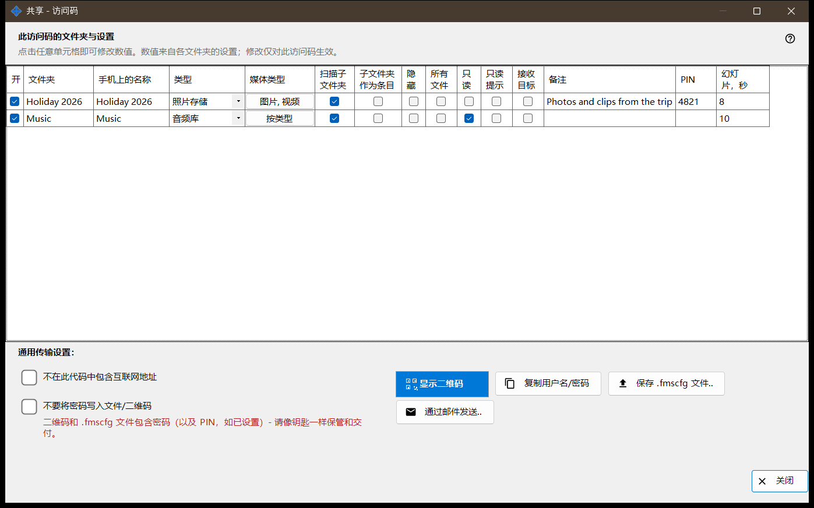
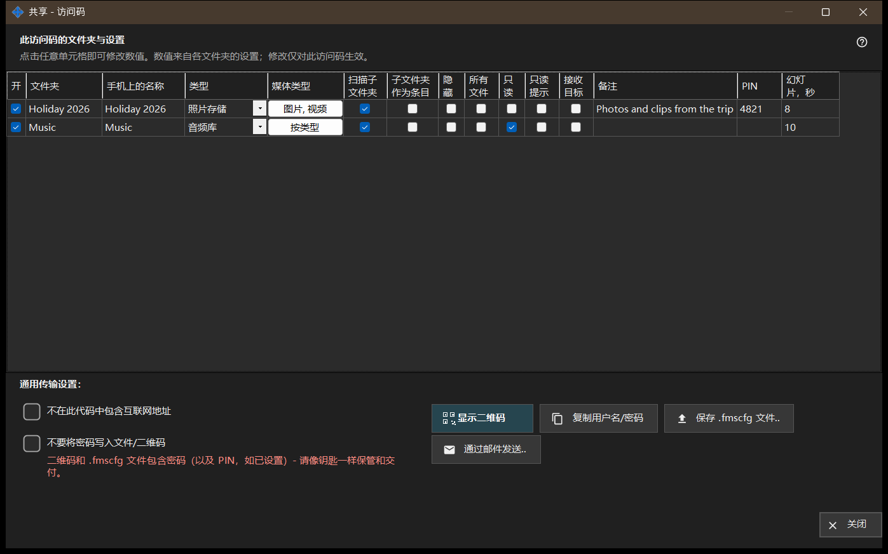

共享 - 访问码
用途说明
为手机生成访问码：一个二维码和一个 .fmscfg 文件，其中包含地址、登录名和所选文件夹。它在共享开启时从主窗口的「共享」按钮打开，并在交出代码之前检查手机是否真的能连到这台电脑。


操作顺序
- 勾选要放入代码的文件夹。
- 修改表格中需要因本次代码而不同的任何单元格。
- 如有需要，勾选「不在此代码中包含互联网地址」或「不要将密码写入文件/二维码」。
- 等待访问检查。
- 显示二维码、保存 .fmscfg 文件、通过邮件发送，或复制用户名和密码。
界面元素
此访问码的文件夹和设置
每个共享文件夹一行，列为：开、文件夹、手机上的名称、类型、媒体类型、扫描子文件夹、子文件夹作为条目、隐藏、只读、只读提示、目标、备注和幻灯片，秒。点击单元格即可更改。这些值以各文件夹自己的设置为起点，所做修改只适用于本次代码。「只读」是服务器上的真正锁定；「只读提示」只是在应用中隐藏编辑按钮。目标文件夹始终可写，所以「只读」不适用于它。
通用传输设置
「不在此代码中包含互联网地址」让手机只通过本地网络连接；它不会关闭服务器，整个共享的互联网访问需在管理器设置中关闭。「不要将密码写入文件/二维码」会从代码中去掉密码；请另行告知密码。手机是否接受不含密码的代码，取决于应用版本。
访问检查
获取状态期间，窗口会提示。如果服务器未运行、没有勾选文件夹，或没有可用地址，会有提示说明缺少什么。检查未完成时，不会交出代码和文件：请点击「重新检查访问权限」。
显示二维码
二维码和 .fmscfg 文件会开放对文件夹的访问，并且包含密码和（若已设置）PIN - 请像对待钥匙一样保管和交接。如果设置太大，二维码装不下，请保存文件并改为发送文件。
文件、邮件和登录名
「保存 .fmscfg 文件..」写出文件；在无法限制访问的文件系统上，或在其他人可以修改的文件夹中，窗口会拒绝，因为该文件包含访问密钥。「通过邮件发送..」附上文件，并附一条说明，提示在 Android 应用中导入并随后删除它。「复制用户名/密码」把两者放入剪贴板。